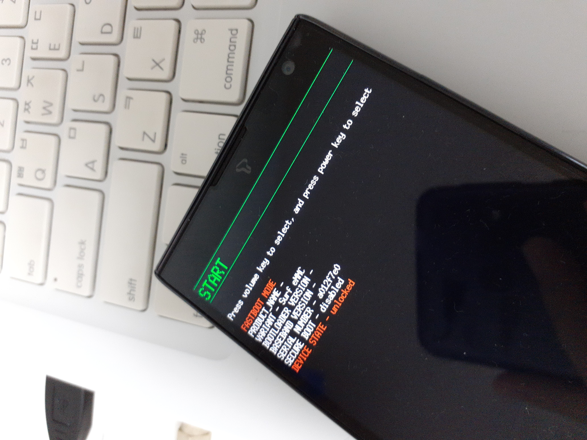

Pantech SKY VEGA S5
Jump to navigation
Jump to search
|
 Pantech SKY VEGA S5 | |
| Manufacturer | Pantech |
|---|---|
| Name | VEGA S5 |
| Codename | pantech-ef44 |
| Released | 2012 |
| Category | testing |
| Original software | Android 4.0.4 (Upgraded to 4.1.2) |
| Hardware | |
| Chipset | Qualcomm Snapdragon S4 Plus (MSM8960) |
| CPU | Qualcomm Krait MP2 1.5GHz |
| GPU | Qualcomm Adreno 225 |
| Display | 720x1280 IPS LED |
| Storage | 16GB |
| Architecture | armv7 |
{kind=link}
| USB Networking | |
|---|---|
| Flashing |
Partial
|
| Touchscreen | |
| Display |
Partial
|
| WiFi | |
| FDE | |
| Mainline |
Partial
|
| Battery | |
| 3D Acceleration | |
| Audio | |
| Bluetooth | |
| Camera | |
| GPS | |
| Mobile data | |
| SMS | |
| Calls | |
| USB OTG / USB-C Role switching | |
| NFC | |
| Accelerometer | |
|---|---|
| Magnetometer | |
| Ambient Light | |
| Proximity | |
| Hall Effect | |
| Barometer | |
| Power Sensor | |
| Camera Flash | |
|---|---|
| Keyboard | |
| Touchpad | |
| USB-A | |
| HDMI/DP | |
| Ir TX | |
| Ir RX | |
| Stylus | |
| Haptics | |
| Ethernet | |
| FOSS bootloader | |
Contributors
- Hexagonwin
Users owning this device
- Hexagonwin (Notes: Previous main phone, found JTAG, but does MSM8960 mainline work??)
How to enter system modes
- For fastboot mode, hold both volume keys and power key until Pantech menu shows. Then, choose fastboot in the Pantech Menu.
- For Recovery mode, hold volume up and power until bootloader's splash image is gone.
Installation
The downstream based port is not booting, and thus is not upstreamed. With the (close to) mainline kernel the device is booting, so it might get upstreamed later on. In the meantime, please manually compile the mainline kernel fork available on the bottom of the page. The pmOS installation can either be on the microSD card or the internal eMMC.
Problems
- Vendor kernel (Linux 3.4.0) only compiles and boots with certain old toolchains, arm-eabi-4.4.3, arm-eabi-4.6, arm-eabi-4.7.
- Not many users are available for the target, and less developers are availlable.
- Hardware failures are common, including the touchscreen, speaker, battery, camera.
Mainline
- With a dts, the phone can boot Linux 5.19-rc7 from peremen's tree.
The phone boots normally, and USB telnet is working fine in debug-shell. eMMC is being detected and the kernel boots with both lk2nd and stock fastboot. As the kernel image is bigger than the boot partition (10MB), it can only boot the kernel by loading it from fastboot.
Pictures
postmarketOS-edge with Linux 5.19-rc7 booted, showing login prompt
{kind=link}
See also
- Downstream kernel source (3.4.0 kernel identical to vendor kernel zip)
- Close to mainline kernel (5.19-rc7) (based on peremen's Casio G'zOne mainline kernel)